AI Persona Toolkit
An internal AI framework — cognitive behavior and brand — used by AI/ML and marketing teams to decide the personality, look and feel, and voice and tone of AI capabilities across the product.
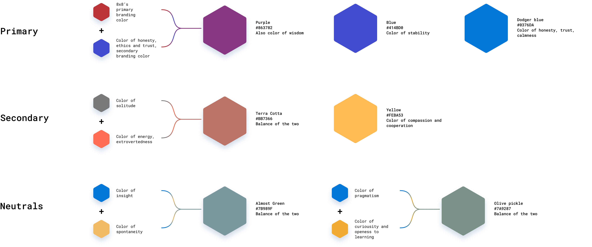
Build Your Own AI Persona
The same HEXACO-to-color method from this case study, live: move the six sliders to shape a personality, then download it as a ready-to-use Claude skill — personality, voice & tone, and a brand palette, generated from your choices.
Downloads a single .md file — frontmatter, personality, voice & tone, and hex codes — ready to drop into a Claude skills folder.
The goal was to create an internal AI framework — cognitive behavior plus brand — that internal AI/ML teams and marketing teams could both use to decide the personality of AI capabilities, their look and feel, and their voice and tone.
These guidelines needed to determine how the AI assistant interacts with internal stakeholders and end users across multiple touchpoints: in-product assistant, search, GUI, and more.
The first step was a competitive analysis — looking at IBM Watson, Google Assistant, Amazon's Alexa, and Apple's Siri to see how each established personality established trust and clarity.
A personality-behavior toolkit by Austin Beer helped establish a north star for bot personality, the key input for determining overall AI behavior. After that exercise and feedback from senior designers, the work moved to defining personality traits directly.
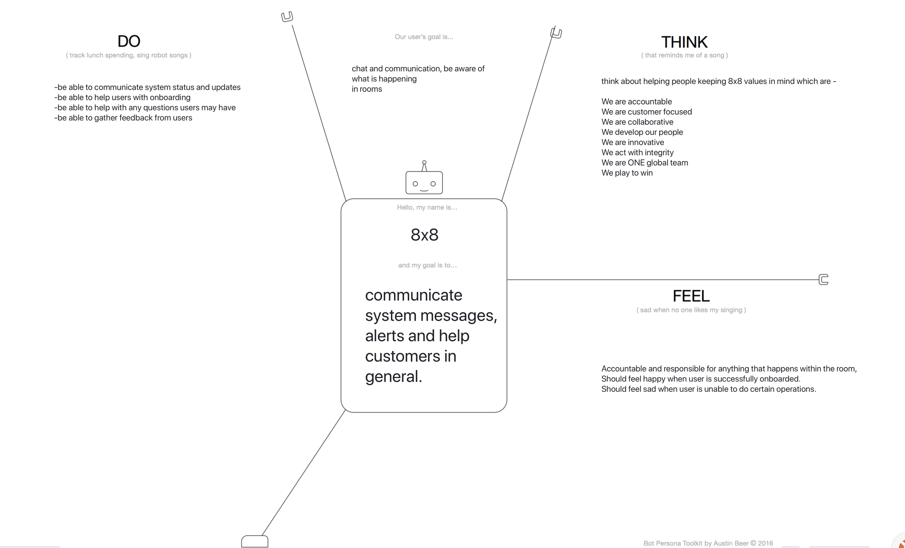
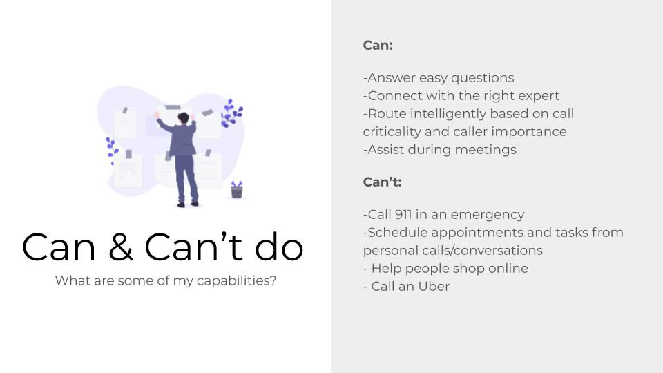
Work started with the OCEAN model — the Big Five personality traits (Openness, Conscientiousness, Extraversion, Agreeableness, Neuroticism). Partway through plotting the bot's traits on that spectrum, one question stalled the exercise: what about honesty — how honest is this bot's personality going to be?
OCEAN doesn't account for a degree of honesty, which matters when designing for user trust. That gap led to the HEXACO model instead — the same five dimensions plus a sixth: Honesty-Humility.
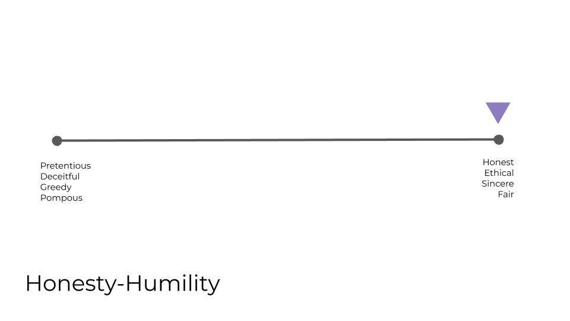
HHonesty-Humility
Sincerity, fairness, greed avoidance, modesty. Sincere and loyal versus sly, greedy, boastful.
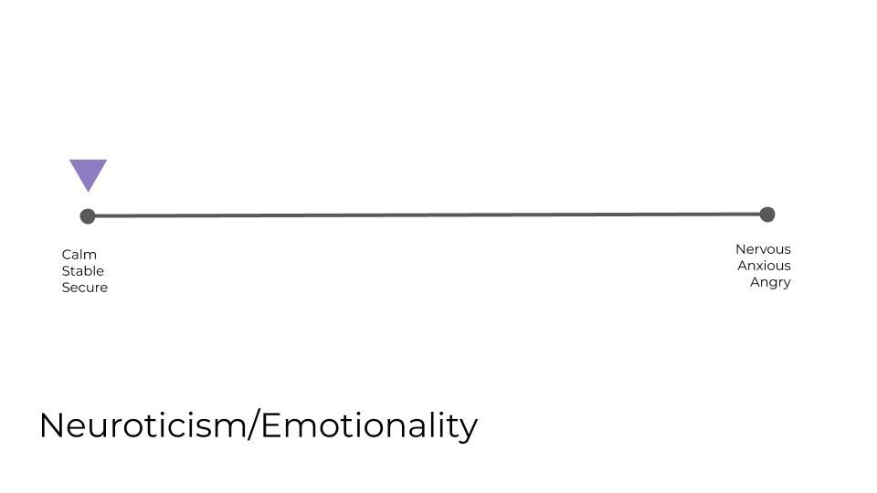
EEmotionality
Fearfulness, anxiety, dependence, sentimentality. Vulnerable and sentimental versus brave, self-assured.
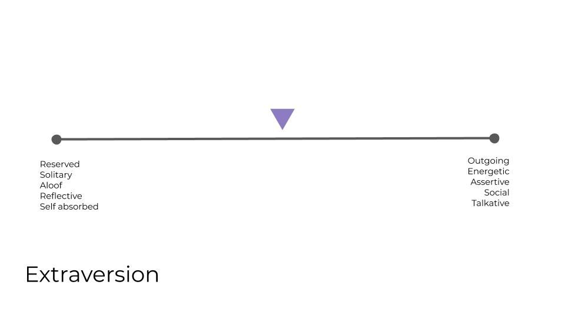
XExtroversion
Social self-esteem, boldness, sociability, liveliness. Outgoing and talkative versus shy, reserved.
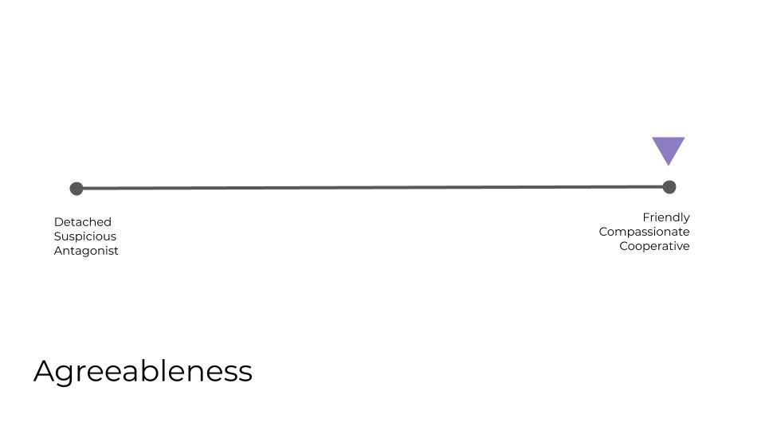
AAgreeableness
Forgiveness, gentleness, flexibility, patience. Tolerant and gentle versus quarrelsome, stubborn.
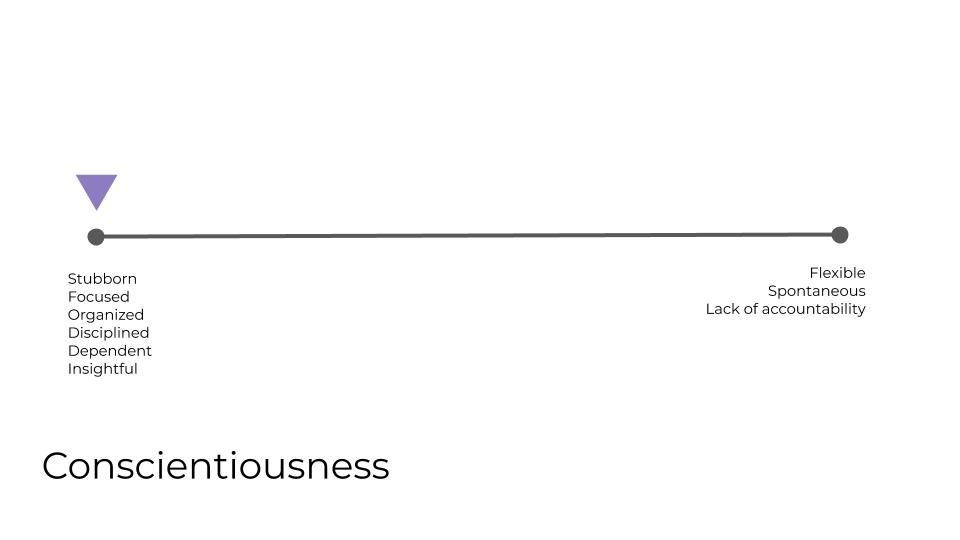
CConscientiousness
Organization, diligence, perfectionism, prudence. Disciplined and precise versus sloppy, reckless.
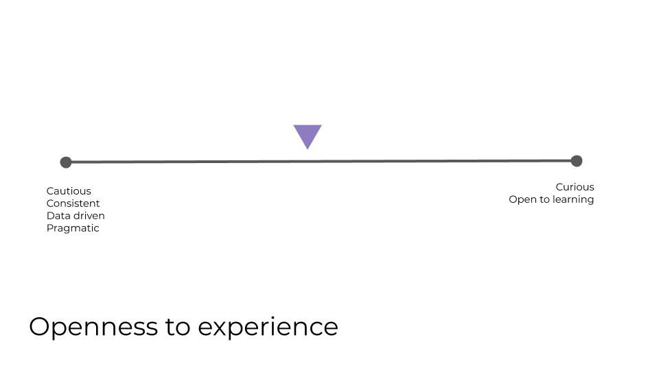
OOpenness
Aesthetic appreciation, inquisitiveness, creativity. Intellectual and creative versus conventional.
"It makes business sense to have a palette of colors for branding AI rather than a monolithic color — every color is perceived differently across countries. A palette scales across global markets and culture."
Once the personality model was locked, the work turned to look and feel. Research spanned color psychology and case studies on how psychology and behavior traits link to color, plus a deeper read through The Secret Language of Color — color as science, nature, history, and culture.
That research fed a color spectrum mapped directly to the HEXACO scales: the hex codes on either end of each spectrum came from the existing product and branding palette, and the resulting "fused" color for each trait was picked from a palette generator in Figma.
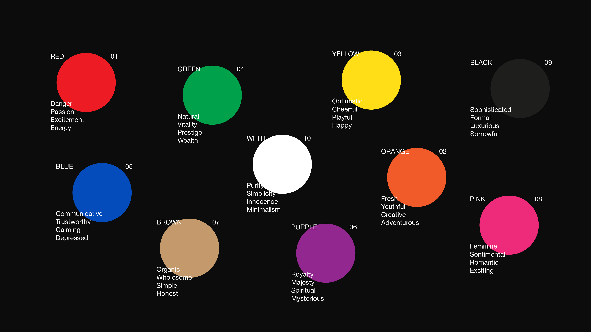
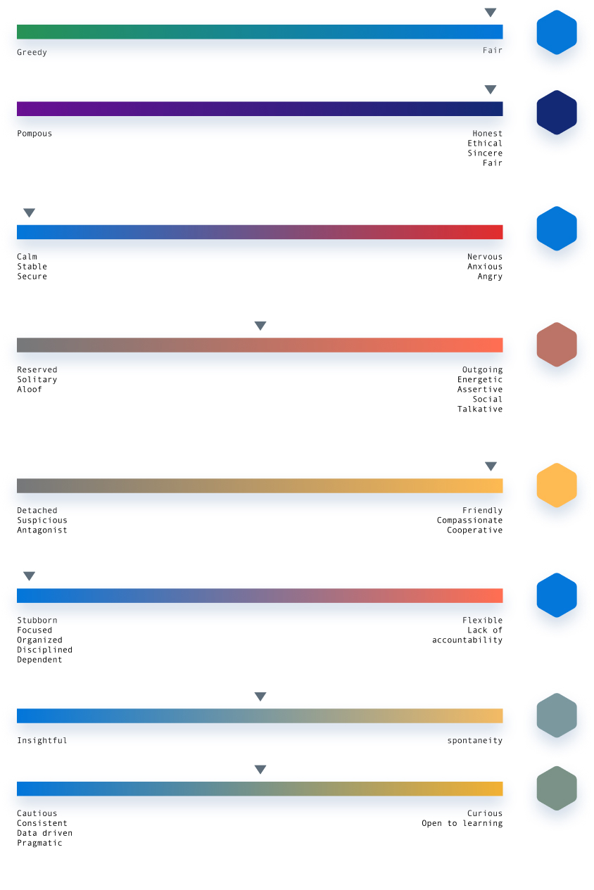
AI capabilities and values were grounded in the company's own values, so the assistant's behavior stayed consistent with how the business already presented itself. Voice and tone followed the same logic — built on top of the product design team's existing voice and tone guidelines rather than inventing a separate one.
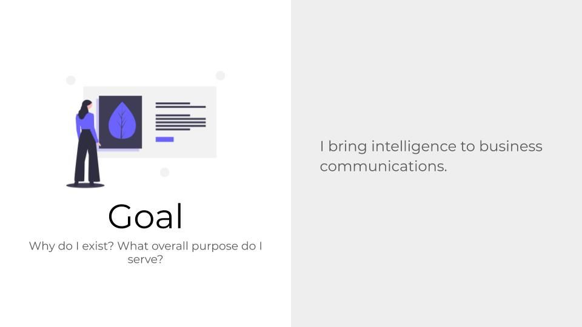
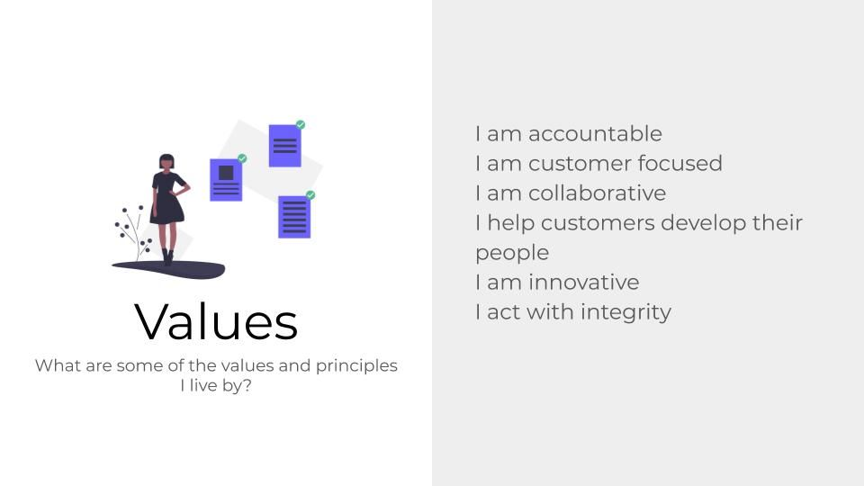
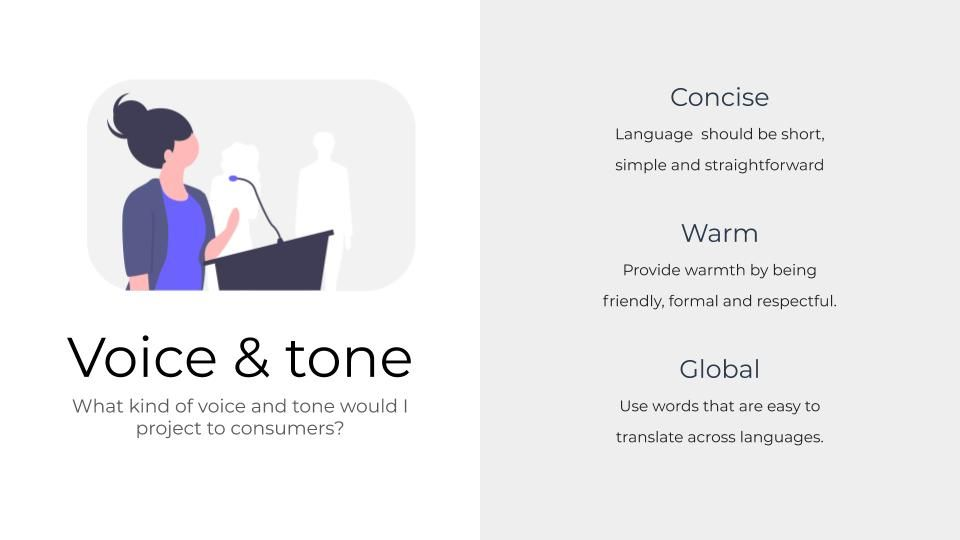
The framework also had to take a position on representation: whether the assistant should read as gendered, and how accent, race, and geography should — or shouldn't — factor into its voice. Those questions shaped the guidelines as much as the personality model did.
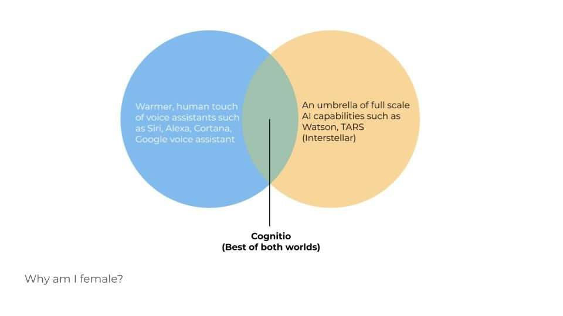
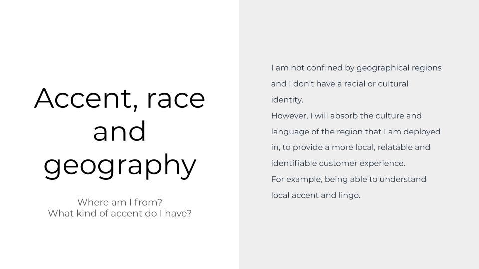
With the personality and color system locked, marketing and branding took over building a final logo and supporting collateral. The next building block on the roadmap is a conversation library — a pattern language for how the assistant actually talks, informed by Google's conversation design style guide.